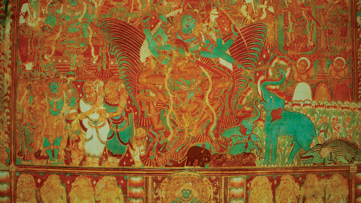

ALAPPUZHA
Alappuzha
Referred to as the Venice of the East, Alappuzha has always enjoyed an important place in the maritime history of Kerala. Today, it is famous for its boat races, backwater holidays, beaches, marine products and coir industry. Alappuzha Beach is a popular picnic spot. The pier, which extends out to the sea here, is over 137 years old. Entertainment facilities at the Vijaya Beach Park add to the attraction of the beach. There is also an old lighthouse nearby which greatly intrigues all visitors.
Another delightful experience while in Alappuzha is the houseboat cruise. The houseboats you find in the backwaters of Alappuzha are in fact a reworked version of the Kettuvallams of olden times. Kettuvallam is a Malayalam word, ‘Kettu’, refers to dwelling structures and ‘Vallom’ means boat. In the olden days, kettuvallam or boat with thatched roof that covers over wooden hulls was used to carry tons of rice and spices.

AMBALAPPUZHA SREEKRISHNA SWAMY TEMPLE
Built in the typical Kerala architectural style, Ambalappuzha Sree Krishna Temple is dedicated to Lord Krishna. The temple is famous all over India for the Pal Payasam, a daily offering of deliciously sweet milk porridge. The temple is also noted for the performance of Pallipaana performed every 12 years by Velans (sorcerers).
temple also has a majestic display of paintings depicting the ten avatars of Lord Vishnu (Dasavatharam). Devotees are also reminded that is here that the first performance of the legendary Ottanthullal, a powerful satirical folk art that comments on various socio-political issues, was first performed.
CHETTIKULANGARA DEVI TEMPLE
The Kettukazhcha festival at Chettikulangara Bhagavathy Temple, situated in Mavelikkara, draws large crowds of devotees. Processions of tall decorated structures on chariots, brightly decorated effigies of horses and bullocks and cultural performances make a spectacular pageant. The annual Chettikulangara Bharani festival is held during the Malayalam month of Kumbham (February-March).

KRISHNAPURAM PALACE
The 'Gajendra Moksham' is a massive mural depicting an elephant saluting Lord Vishnu as the other Gods, Goddesses and sages look on in reverence. At 49 sq m, this largest single mural band of its kind ever found in Kerala, greets all who visit Krishnapuram Palace. It is said that Lord Vishnu was the chief deity of theerst while Kayamkulam royal family. This mural was placed at the entrance to the palace from the pond to enable the rulers to worship the deity after their bath.
The Krishnapuram Palace is a rare specimen of the Kerala style of architecture, complete with gabled roofs, narrow corridors and dormer windows. Residence of the rulers of Kayamkulam Kingdom, the age of the palace is unknown. Renovated in the 18th century, the palace is today a protected monument under the Archaeology Department. Recently it was again renovated according to the scientific techniques prescribed for the protection of heritage buildings. One can come across many rare antiques and paintings when exploring this beautiful palace.

KUTTANAD
Kuttanad, the 'Rice Bowl of Kerala’, lies at the very heart of the backwaters in Alappuzha district. Its wealth of paddy crops is what got it this unique nickname. Based in the inner regions of the district, it is a huge area of reclaimed land, separated by dikes from water which is higher than it appears. The view of the countryside is what enchants all who pass through this area while travelling via houseboats. It has been speculated that it is perhaps the only place in the world where farming is done up to 2 meters below sea level. The area is serviced by 4 major rivers: Pampa, Meenachil, Achankovil and Manimala.
The Alappuzha - Changanassery Road that passes through the heart of Kuttanad is famous for itsscenic view of this locale. One gets to view a slice of the traditional country lifestyle. Visits to these villages can be a life changing experience. Especially during the harvest season, one finds farmers working in the fields most of the day. The early hours of the day brings to us the sight of women carrying sickles to the fields while men are busy sowing seeds and getting rid of weeds. Fields with rice stalks have legions of parrots hovering around them. One may also see darter birds flying around as they are known to be around the area surrounding the backwaters.
The canals that crisscross Kuttanad are home to tall coconut trees that sway with the breeze. One sees ducks quacking around as youths dive into the water to hunt for shells. Some of the tastiest cuisine can be found at the shacks nearby and if you feel like it, do ask for toddy. It is a native alcoholic beverage that is extremely popular in the area.